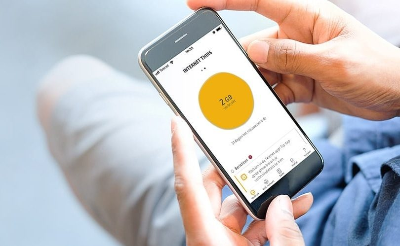

The Challenge
Customers lacked an intuitive, digital-first way to manage home broadband, troubleshoot network issues and monitor data — bridging complex backend telecommunications services with seven key everyday customer experiences.
The Approach
- Collaborative architecture. Facilitated cross-functional workshops to map user flows, review low-fidelity wireframes and define the core app dashboard architecture.
- Intuitive UI. Guided the shift to a high-fidelity, card-based interface with clear visual hierarchy to simplify complex account and network data.
The Impact
- Empowered self-service. Delivered a mobile app with real-time data tracking, account management and active Wi-Fi optimisation.
- Live deployment. Shipped a fully realised product letting customers monitor usage and manage broadband from their phones, driving a 3-year, organisation-wide digital transformation.
